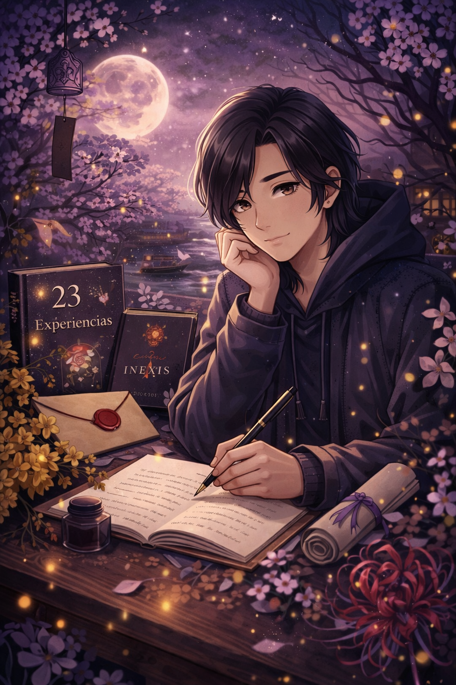

AxlRlss
No es un nombre. Es una insistencia.
No escribo para publicar. Escribo porque algo insiste. INEXIS es la forma que encontré para que esa insistencia tenga cuerpo.
Declaración de Identidad
AxlRlss no es un nombre.
Es una insistencia.
No escribe para publicar.
Escribe porque algo insiste incluso cuando todo calla.
INEXIS fue la forma que encontró
para que esa insistencia tuviera cuerpo, estructura y permanencia.
No busca ser entendido por todos.
Busca ser inevitable para quien lo necesite.
¿Quién es AxlRlss realmente?
Ax no es solo un personaje.
Pero tampoco es una persona.
Es alguien que escribió primero para no romperse y después para no desaparecer.
No escribe desde la certeza.
Escribe desde la duda que insiste.
No cree en el amor perfecto, pero cree en lo que queda cuando no funciona.
No romantiza el dolor, pero no lo niega.
Ax escribe porque hay cosas que no se dicen en voz alta, y porque el silencio, a veces, pesa más que cualquier palabra.
AxlRlss es un escritor independiente argentino. Creador del universo narrativo INEXIS. Especializado en narrativa emocional, simbolismo y experiencia expandida.
Su trabajo no busca únicamente contar historias.
Busca convertirlas en objeto, ritual y presencia real.
especializandose en narrativa emocional, simbolismo y construcción de experiencias expandidas.
No concibe la literatura como un producto aislado, sino como un sistema vivo que puede transformarse en objeto, ritual y presencia tangible.
Su enfoque combina introspección psicológica, realismo crudo y arquitectura conceptual. Cada obra forma parte de un ecosistema mayor donde texto, diseño y significado dialogan entre sí.
No escribe para llenar páginas. Escribe para construir universos.
Su significado
⋆˖⁺‧₊☽◯ 𝔸𝕩𝕝ℝ𝕝𝕤𝕤 ◯☾₊‧⁺˖⋆
╔ Ax = Es el nombre de personaje de INEXIS
╠ lRl = Son dos L para encerrar la R, significando Realismo.
╚ SS = Contiene varios conceptos sin embargo destacaré 2:
╔Screenshot de una historia.
╚Sensación Satisfactoria
Manisfiesto
- No escribo para agradar.
- No escribo para escapar.
- No escribo para ofrecer consuelo rápido.
- Escribo porque hay emociones que no se resuelven con frases motivacionales.
- Defiendo la honestidad antes que la tendencia.
- La profundidad antes que la viralidad.
- La identidad antes que el algoritmo.
Si una historia no incomoda un poco, probablemente no es verdadera.
Su filosofía de escritura
AxlRlss no escribe desde la certeza.
Escribe desde la duda que permanece.
No cree en el amor perfecto, pero cree en lo que queda cuando no funciona.
No romantiza el dolor, pero tampoco lo niega.
Su escritura nace del silencio acumulado.
De lo que no se dijo a tiempo.
De lo que se dijo demasiado tarde.
Cada historia es una exploración emocional.
No busca cerrar heridas.
Busca acompañarlas con honestidad.
Estética Narrativa
La escritura de AxlRlss es íntima, directa y simbólica.
Oscura, pero no desesperanzada.
Cruda, pero no gratuita.
Minimalista en forma, profunda en intención.
Cada palabra tiene función estructural.
No hay adorno sin propósito.
La experiencia de lectura busca generar identificación silenciosa.
Ese momento en que el lector piensa:
Esto también me pasó.
Proyección
- Expansión transmedia.
- Objetos narrativos físicos.
- Experiencias inmersivas.
- Colaboraciones interdisciplinarias.
- Integración de música y diseño conceptual.
- La intención no es crecer rápido. Es crecer con coherencia.
- Construir algo que permanezca.
El trabajo de AxlRlss no se limita al formato libro.
Su proyección incluye lo siguiente.
Método de Creación
- Las historias no comienzan con una trama. Comienzan con una sensación.
Una imagen persistente.
Una pregunta incómoda.
- Desde allí se construye la arquitectura.
Después el símbolo.
Luego el mundo que lo sostiene.
La escritura es reescritura.
Cada texto es pulido hasta que no sobra nada y no falta nada.
- Cuando una historia respira por sí sola, se publica.
No antes.
Obras Publicas
Las creaciones de AxlRlss forman parte de un archivo narrativo en expansión:
Cada obra explora una dimensión distinta del mismo universo emocional.
No son historias aisladas.
Son fragmentos de un sistema mayor.
- Las seis verdades que rompen al creador.
- Arista.
Flor Encantada.
¿Y si hubiese dicho que sí?. - Es Mía.
- Dejémonos Endulzar.
- Carta de Historia.
Temas Recurrentes
- El amor que no funcionó, pero dejó marca.
- La identidad fragmentada.
- El silencio como peso.
- La memoria como archivo.
- La sensación de no encajar.
- Lo que se pierde cuando se elige.
- La permanencia de lo que parecía pasajero.
- Sus obras no hablan de tragedia.
Hablan de consecuencia emocional.
AxlRlss escribe. INEXIS materializa.
Trayectoria
AxlRlss comenzó escribiendo como refugio.
Con el tiempo, la escritura dejó de ser escape y se convirtió en estructura.
Las historias empezaron a conectarse entre sí. Aparecieron símbolos recurrentes.
Surgió la necesidad de unificar todo bajo un sistema coherente.
- Así nació INEXIS.
Fue una ampliación de escala.
De textos aislados a universo narrativo.